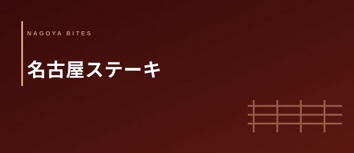

ステーキ・洋食高単価
名古屋 ステーキ おすすめ10選
【2026年版・黒毛和牛・熟成・炭火 接待・誕生日・記念日 業界人厳選】
名古屋のステーキシーンは、ここ数年で大きく変わった。熟成肉の専門店が栄・錦エリアに相次いで開業し、炭火焼きや薪火という調理法の多様化が進んだ。鉄板焼きのように演出が前景にあるのではなく、ステーキは「焼き手の哲学と牛の素性」が皿に直接表れる業態だ。熟成の手法と産地の透明性・焼き手の火入れ技術・価格と体験のバランスという3軸で、接待・誕生日・記念日に本当に使える10軒を業界人視点で厳選した。
Editor's Note — この特集の3つの選定軸
- 熟成の手法と牛の産地透明性：ドライエイジング・ウェットエイジングの別、月齢・産地・品種の明示。「黒毛和牛A5」という表記だけでは評価しない——どこの牛を、どう熟成させ、何日寝かせたかまで説明できる店を選ぶ。透明性のある仕入れは、料理の誠実さそのものを映す
- 焼き手の技術（火入れと休ませ方）：高温でのシア（表面の焼き固め）から、内部温度の管理、そしてレストを取る時間の設計まで。和牛の強いサシを最大限活かすには「焼きすぎない判断力」が問われる。素材の声を聞いて焼くシェフと、レシピ通りに焼くシェフでは食べた瞬間に差が出る
- 価格と体験のバランス：食材原価率と接客・空間への投資の配分。1人15,000円の食事が「安かった」と感じるか「高かった」と感じるかは、料理以外の要素が大きく左右する。個室・照明・サービスの質が食事体験に統合されているかを評価する
名古屋のステーキ事情を鉄板焼きと対比して理解すると、業態の本質的な差異が見えてくる。鉄板焼きは「演出が食事の一部」として機能し、シェフの目の前でのパフォーマンスが料理体験に組み込まれる設計だ。一方ステーキは、厨房または半オープンのグリルで焼き手が素材と向き合い、その結果だけが皿に乗って届く——いわば「焼き手の独白」とも言える。食べ手に与えられるのは演出ではなく「判断の結果」であり、だからこそ焼き手の哲学と牛の素性が全面に出る。
熟成肉のトレンドが名古屋の高単価飲食シーンに浸透したのは2020年代に入ってからだ。東京の熟成肉ブームが名古屋に波及し、ドライエイジングを専門とする個人経営の店が錦・栄・矢場町エリアを中心に開業した。熟成肉の特徴は「うま味成分の凝縮」と「繊維の分解によるやわらかさ」だが、適切に熟成された肉かどうかは価格では判断できない。産地・月齢・熟成日数の情報開示姿勢が、店の誠実さと直結している。接待・誕生日・記念日という高単価シーンで信頼できる10軒を以下に選ぶ。
01 — 厳選10軒
名古屋駅から徒歩5分、昭和50年代に創業した老舗ステーキ専門店。半世紀近く名古屋の高単価飲食シーンで生き残ってきた最大の理由は「変わらない味の信頼感」だ。創業以来継ぎ足してきたデミグラスソースベースのソースは、牛骨と野菜を長時間煮込んで作られ、一口で「ここの味」と判別できる個性を持つ。仕入れる牛は国産黒毛和牛のサーロインとフィレを中心に、月齢24〜30ヶ月の肉を厳選。熟成は自社の冷蔵室でウェットエイジング28日間を基本としており、牛の旨みと柔らかさのバランスが取れた状態で提供される。名古屋駅近くの立地は、東京・大阪からの出張者を接待するシーンで「名古屋の老舗」という物語を添えられる強みがある。カウンター席とテーブル席を備え、個室（4〜8名）も2室完備しており、幅広いシーンに対応できる。ランチも営業しており、初めて来店する際の下見にも使いやすい。
「創業50年近い継ぎ足しソースがある店は名古屋でここだけだ。そのソースの記憶が人を繰り返し引き寄せる。老舗のステーキ店が持つ最大の武器は『再現の信頼性』であり、接待に使う側にとっては最大のリスクヘッジになる。」
名古屋の熟成肉シーンで別格の地位を占めるドライエイジング専門店。店内に設置された専用熟成庫は温度1〜3℃・湿度80〜85%で管理されており、牛肉の外側に形成される「ドライエイジングクラスト」（熟成の皮膜）が正常に育っているかを毎日確認している。最短60日、通常90日、特別メニューでは120日以上のエイジングを経た肉が提供される。産地表示は徹底的で、メニューには「岩手産黒毛和牛・雌・月齢28ヶ月・90日ドライエイジング」という形で情報が記載される。この透明性が飲食業界人の間で「名古屋で一番誠実な肉屋」という評価を生んでいる。焼き手は炭火グリル（備長炭）を使い、肉のサイズと熟成度に応じて火からの距離と焼き時間を手動で調整するスタイルを取る——レシピではなく経験が焼きを決める、という姿勢がカウンター越しに伝わってくる。飲食経営者・料理人が「勉強に行く店」としても知られている。
「ドライエイジングを謳う店は増えたが、産地・月齢・熟成日数を全部開示できる店は少ない。情報を開示するということは、それに対して責任を取るということだ。グリルハウス ブラックはその姿勢が最も一貫している。」
ニューヨークのステーキハウス文化を名古屋に持ち込んだ一軒。オーナーはNY在住10年の経歴を持ち、「ウルフギャング・ステーキハウス」流儀の乾燥熟成ポーターハウスステーキをコンセプトに据えている。使用する牛はグラスフェッド（牧草飼育）のオーストラリア産と、国産黒毛和牛の二本立て。グラスフェッド牛は赤身の旨みとミネラル感が強く、和牛の過剰なサシに疲れた顧客層に特に支持されている。炭火は紀州備長炭を使い、800℃以上の高温で外面を一気に焼き固める手法が特徴だ。NW流「骨付きリブアイ（トマホークステーキ）」は2〜3人分でのシェア提供が基本で、テーブルでのカット演出がニューヨーク的な開放感を演出する。ワインはナパ・ソノマのカリフォルニア産を中心に、ブルゴーニュ・ローヌも揃えており、ソムリエによるボトルペアリングの提案が可能だ。接待というより「盛り上がる食事会」の空間として業界人が多用している。
「NYスタイルのステーキハウスが名古屋に一軒あることの意義は大きい。和牛文化の中に別のアプローチを提示している。グラスフェッドの赤身とカリフォルニアワインという組み合わせは、接待よりも食事を楽しむ会に向いている。」
「ル・ブッチャー（フランス語で肉屋）」という店名が示す通り、フランス産のシャロレー種・リムーザン種をはじめとするヨーロッパ産牛肉と、国産黒毛和牛を並列に扱うユニークな構成を持つ。フランスで畜産業を営む家族から直輸入するシャロレー種（月齢36ヶ月・放牧飼育）は、脂は控えめながら赤身の密度と旨みが傑出しており、和牛とはまったく異なる「肉の哲学」を提示する。対して国産黒毛和牛のサーロイン・フィレはフランスのブシェリー（肉屋）流の解体・熟成アプローチで処理されており、日本の鉄板焼き的な扱いとは一線を画す。空間はパリのビストロを意識したレンガ壁・革のチェア・アンティーク照明で構成されており、フレンチワインとの相性が際立つ設計だ。個室（4〜10名）を備え、接待での利用も可能。ただし「食べることの悦び」を純粋に求める来客に特に向いており、知的好奇心のある接待相手には強い印象を残す。
「フランス産シャロレー種と国産黒毛和牛を同じ店で比較して食べられる機会は名古屋でほぼない。これは単に『美味しい肉』ではなく、『肉の多様性』を体験する場だ。食に関心のある接待相手には、これほど話題が広がる選択はない。」
覚王山の閑静な一角で薪火グリルに特化したステーキを出す一軒。「薪」という店名が示すように、料理の中心には薪火（白樺・クヌギ・ナラのミックス）があり、その燃焼によって生まれる赤外線熱と微量の煙が食材に与える風味を「焼きの個性」として扱っている。炭火との違いは温度変化の不規則性にある——薪は燃焼段階によって火力が変化するため、焼き手は常に薪の状態を読みながら肉の置き場と時間を調整する必要がある。その手間のかかる作業を「不安定さを楽しむ料理」と位置づけるシェフの姿勢が、熱狂的なファンを生んでいる。仕入れる牛は鹿児島産・熊本産の黒毛和牛を中心に、四半期ごとに農場訪問で確認したもののみを使用。覚王山というエリアが持つ「少しだけ遠い特別感」と薪火という視覚的な演出が、誕生日・記念日・プロポーズ前後の食事として選ばれる理由になっている。
「薪火は炭火より制御が難しく、だからこそ面白い。同じ牛肉を同じ重さで焼いても、薪の状態によって仕上がりが微妙に変わる。その不確定要素を腕で制御する——覚王山でその体験ができる店は他にない。」
「サーロインだけを極める」という潔い専門性で本山エリアの固定客を掴んでいる一軒。フィレ・リブロース・ランプなど多部位を扱わずサーロインに特化することで、仕入れの集中・熟成管理の一元化・焼き技術の特化が可能になっている。使用するA5ランク黒毛和牛のサーロインは北海道・鹿児島産を主軸に、月齢28〜32ヶ月の雌を優先して仕入れている。熟成はウェットエイジング21〜30日が基本で、サーロインに特有の「適度な脂と赤身のバランス」を最も引き出す日数を年間を通じて微調整している。グリルはガスグリルにキャストアイアン（鋳鉄）プレートを乗せて使うスタイルで、外面の焼き色とレアな内部の温度管理が正確だ。コースの価格設定は本山エリアの店として良心的な12,000円〜で、栄・錦の高単価店と比べて「コストパフォーマンスが際立つ」と業界人の間で口コミが広がっている。地元の飲食経営者・医師・弁護士など本山近辺の専門職層が常連として定着している。
「サーロインだけをやると決めた店が長く続く理由はわかりやすい——メニューを絞ると品質への集中度が上がり、常連顧客が定着する。本山という立地で12,000円からA5サーロインを出せる店は、名古屋全体を見渡してもほぼない。」
「名古屋で一番ステーキが身近になる店」として地元の会社員・学生・若いカップルに広く支持されているカジュアルステーキの一軒。ランチタイムのサーロインステーキ（150g・2,500円〜）はコストパフォーマンスが抜群で、平日昼は開店直後から満席になる光景が日常化している。使用する牛は国産黒毛和牛とオーストラリア産の二本立てで、グレードとサイズをアラカルトで選べる設計が「ステーキを自分でカスタマイズする楽しさ」を生み出している。ディナーは7,000円〜のコースに加え、単品注文・シェアスタイルも可能で、「ちょっと贅沢な夜ご飯」として使いやすい価格帯が幅広い客層を呼び込んでいる。グリルはガスグリルと鋳鉄プレートの組み合わせで、焼き加減のリクエストに正確に応答するホスピタリティが評価されている。「高級ステーキ店に行く前にまずここで焼き加減の好みを確認する」という使い方が業界人に浸透しており、ステーキ体験の入門店としての役割を担っている。
「ステーキの敷居を下げることが悪いわけではない。2,500円から和牛を食べられる体験が積み重なって、その先に15,000円のコース店への需要が生まれる。ビーフテリアはその入口として正しく機能している。」
錦の夜を象徴するステーキとバーを一体化させた一軒。ステーキを食べながらウイスキーや自然派ワインを飲む——という体験の設計が他の専門店にない独自性を生み出している。アラカルトの構成は黒毛和牛A4〜A5のサーロイン・フィレ・ランプをグラム単位で注文できる形式で、バー利用の一品としても、食事のメインとしても機能する柔軟性がある。ウイスキーのセレクションはスコッチ・ジャパニーズ・アイリッシュにわたり、シングルモルト中心のラインナップは錦エリアのバー文化と肉の旨みを接続するコンセプトを体現している。深夜1時まで営業しており、「接待の2次会に少し良い肉を食べに行く」「終電後に一人でサーロインとウイスキー」という使い方が錦の飲食業界人に浸透している。空間は黒を基調としたバーカウンターと隠れ家的なソファ席で、照明は最小限に絞られており、夜の錦らしい大人の雰囲気が漂う。
「ステーキとバーの組み合わせはニューヨークやロンドンではごく普通だが、名古屋では希少だ。接待の1次会を鉄板焼きで済ませた後、2次会でここに来るという流れが業界人の間で定番になってきた。肉×ウイスキーは最高の組み合わせだ。」
大須の多様なグルメ文化の中に埋め込まれたように存在するステーキ専門店。観光客ではなく地元の常連が食事をしに来る店として、大須というエリアの食文化の厚みを示す一軒だ。オーナーシェフの田村隆氏（屋号「隆」はシェフの名前から）は大阪・北新地の高級ステーキ店で10年修行した後、「高単価だが身構えなくていい店」を大須に作ることを選んだ。使用する牛は北海道・岐阜産の黒毛和牛A3〜A5ランクをコースグレードによって使い分け、焼き台は鉄板（鋼板）と炭火の両方を状況によって使い分ける柔軟性を持つ。コース構成は8,000円〜と価格帯が低めに設定されているが、素材の品質は1ランク上の設定で、「実力より安く出す」という経営姿勢が地元常連の絶大な信頼を生んでいる。予約は必要だが2週間前でも取れることが多く、高級店へのハードルをかけずに本格ステーキを体験できる受け皿として機能している。
「大須でこのクオリティをこの価格で出せるのは、シェフが場所を選んで商売を設計しているからだ。家賃と客単価のバランスを正しく計算して、素材品質を高く保てる構造を作っている。飲食業の教科書にしたい経営だ。」
千種エリアの住宅地に溶け込むように佇む黒毛和牛専門のステーキ店。完全予約制・個室のみ・おまかせコース一本という極めてシンプルな設計が、贅沢な秘密感を生み出している。オーナーシェフの晴山修氏は東京・銀座の黒毛和牛専門店で12年間経験を積んだ後、故郷の名古屋に「日本一誠実な和牛の出し方をする店」を作ることを目標に開業した。仕入れる牛は鹿児島・宮崎産黒毛和牛のみに絞り込み、農場との直接契約によって月齢・性別・飼料まで管理されたものだけを使用する。ドライエイジングは自社管理庫で45〜60日が基本で、日本のステーキ店では珍しい長期熟成を標準としている。個室3室はいずれも4〜8名対応で、接待・誕生日・記念日・プロポーズ後の会食など特別なシーンに対して完全に設計されている。千種という立地は栄・名駅から少し離れている分、「わざわざ足を運ぶ」という行為自体が特別感を演出する。名古屋の業界人の間では「最後に連れて行く店」として語られる一軒だ。
「晴山で食べた和牛の記憶は他の店では上書きされない。農場から熟成庫まで一切妥協せず、それを個室という静かな空間で一対一の真剣さで提供する——飲食業をやっている人間が一番評価する要素が全部揃っている。」
熟成肉が名古屋の高単価飲食シーンで普及した背景 — 業界人コラム
名古屋に熟成肉専門店が増え始めたのは2018年頃からだ。東京では2013〜15年のドライエイジングブーム以降、赤身肉・熟成肉の専門店が急増し、名古屋にはその波が遅れて届いた。名古屋の食市場は本来「コスパに厳しい」土地柄で知られており、同じ価格帯の和牛料理なら鉄板焼き・すき焼き・焼肉という既存業態への信頼が高かった。その中で熟成肉ステーキが独自のポジションを作れた理由は、「見えない価値の説明力」にある。
通常の和牛ステーキと熟成肉ステーキを皿だけで比較すると、前者の方が「美しく見える」ケースが多い。熟成肉は外観でのアピールが弱い。しかし「45日ドライエイジング」「北海道・十勝産・月齢30ヶ月・雌牛」という言語情報が食べ手に与える体験への期待値は、ビジュアル以上に食事の前段階に影響を与える。熟成肉の普及は、食材のストーリーを受け取る消費者側のリテラシーが上がったことの証左だ。
飲食業界側の変化は仕入れルートの多様化にある。2000年代まで名古屋の牛肉仕入れは問屋経由が主流で、農場からの直接仕入れは一部の大手業者に限られていた。ここ10年でオーナーシェフが農場に直接交渉するケースが増え、品種・月齢・飼料まで指定した仕入れが個人経営店でも実現可能になった。この変化が熟成肉の透明性を支える基盤となっており、「産地を開示できる店が増えた」という現象として可視化されている。接待や記念日という特別シーンで名古屋のステーキを選ぶ理由はこの透明性の深まりにある——食べ手が食材の素性を知ることが、食事の体験をより深く記憶に刻む構造を持っているからだ。
業界人流 ステーキの焼き加減と「名古屋式」の頼み方
- 焼き加減はミディアムレアを基準に考える：和牛のA5ランクはサシが多いため、レアよりもミディアムレアの方が脂が適度に溶けて旨みが増す。赤身主体の熟成肉（グラスフェッドやシャロレー種）はレア〜ミディアムレアが向いており、部位と牛の種類によって焼き加減の最適解は異なる。初来店時はシェフのおすすめに従うことが最も確実だ
- 「名古屋式」の頼み方は「部位+熟成日数」で指定する：グリルハウス ブラック・炭火ステーキ 薪・黒毛和牛専門 晴山など熟成にこだわる店では、メニューに熟成日数が明記されている。「60日エイジングのリブロース」「90日エイジングのサーロイン」という形で指定すると、焼き手が最も自信を持って提供できる一皿が出てくる。熟成日数が長いほど価格は上がるが、体験の密度も上がる
- ステーキの「レスト（休ませ）」を尊重する：焼き上がりから提供まで3〜5分待つのが正しい食べ方だ。焼き立てのステーキを即座に切ると肉汁が一気に流れ出して乾燥する。レストを取ることで肉の内部に肉汁が均一に分散し、切った瞬間のジューシーさが最大化される。「すぐ食べたい」より「少し待ってから食べる」が正解だということをシェフが説明してくれる店を選ぶとよい
- 接待では予約時に「接待利用・人数・予算上限」を明示する：名古屋のステーキ専門店は個人経営が多く、予算を事前に伝えることでコースのカスタマイズに対応してくれる店が多い。上限を伝えることは遠慮ではなく、シェフが最善の選択をするための情報提供だという認識で伝える
- 誕生日・記念日はサプライズの詳細を予約時に全て決める：「当日に相談する」スタイルは店の準備を不十分にする。ケーキの手配・メッセージカードの内容・シャンパンサービスの有無・席の飾り付けなど、望む演出を全て予約時に伝えることが成功の条件だ
- ワインは「白ワインで赤身肉」を試してみる：和牛のサーロインにはブルゴーニュの赤が定番だが、熟成日数が長く旨みが凝縮されたドライエイジングの赤身肉には、シャルドネの樽熟成や南仏の白も意外なほどよく合う。The STEAK HOUSEやステーキ&バー オニキスのソムリエに相談すると、新しいペアリング体験が生まれる